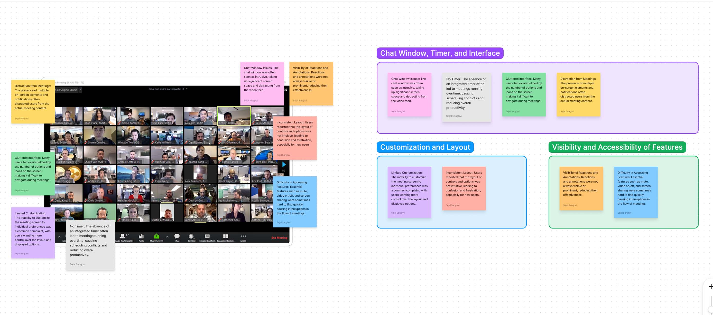

UX / UI Design for Zoom Video Conferencing App
This initiative is tailored for remote workers, project managers, and team leaders who rely on platforms like Zoom. The main goal is to elevate the virtual meeting experience, with a focus on optimizing efficiency and productivity during remote collaborations.
Main Goal
The main goal is to enhance the virtual meeting experience on the Zoom Video Conferencing App by prioritizing efficiency and productivity for remote workers, project managers, and team leaders.
My Role
UX Research, Wireframe and Prototyping, Visual Design, Interaction Design, Usability Testing, Accessibility, Branding, Iterative Improvement, Design Handoff
Tools
Figma, Zoom
Background
Zoom is a versatile communications platform that allows users to connect via video, audio, phone, and chat. It is essential for remote work, virtual meetings, webinars, and online collaboration, requiring an internet connection and supported device.
The UX/UI Design for Zoom Video Conferencing App aims to enhance user experience by optimizing efficiency and productivity for remote workers, project managers, and team leaders.
Designer's Note
My goal was to optimize the Zoom Video Conferencing App for seamless remote interactions, driven by increased demand during the COVID-19 pandemic. Understanding user needs guided our focus on usability, accessibility, and overall satisfaction through UX research, prototyping, and testing. We aimed to enhance virtual meetings, support workflows, and foster productive team interactions in remote work environments.
Let's Dig Deeper into the Specifics
Problem Statement
Remote professionals lack streamlined tools to efficiently organize meeting agendas and manage time during virtual collaborations on platforms like Zoom or Google Hangouts. This results in inefficiencies, reduced productivity, and potential disengagement. As remote work becomes the norm, there's a critical need to enhance the virtual meeting experience for optimal efficiency and productivity.
App Analysis
User Persona

Key Takeaways
Proposed Solution


Information Architecture

Lo-Fi Prototype


Scheduling | Agenda
When creating a meeting, the interface lets you first set up scheduling details and add agendas later. During the meeting, you can also add agendas on-the-fly using a simple icon for a flexible and straightforward experience.
Agenda Display | Chat History
The right-side tab facilitates seamless toggling between agenda and chat history, optimizing the user experience with a compact design and real-time updates.
Live Chat
The live chat feature serves as a valuable tool for businesses, enabling real-time engagement with clients, colleagues, and stakeholders during webinars, presentations, or virtual meetings, fostering interactive dialogue and collaboration.


Timer
The Timer Tab at the top efficiently displays elapsed and remaining time, enhancing productivity with intuitive controls and customization.